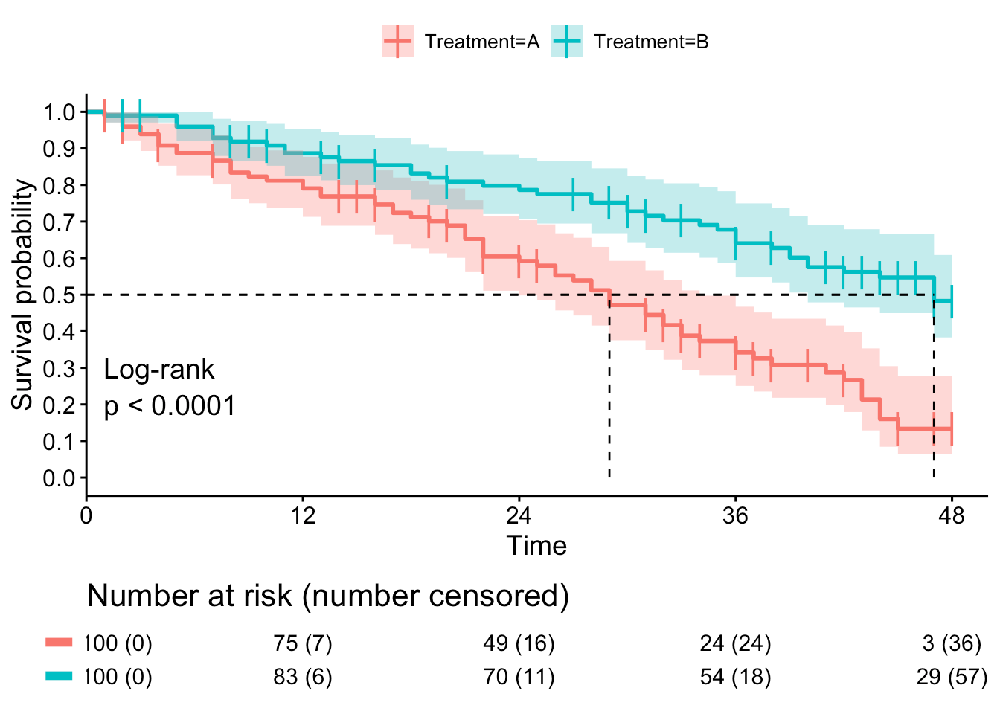
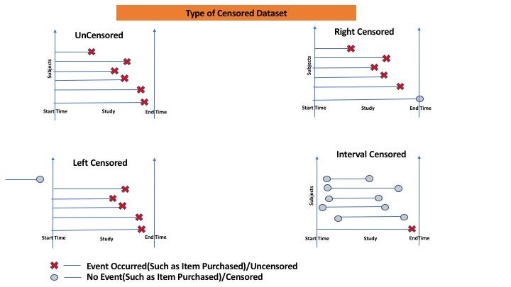
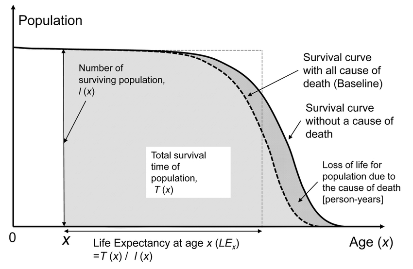
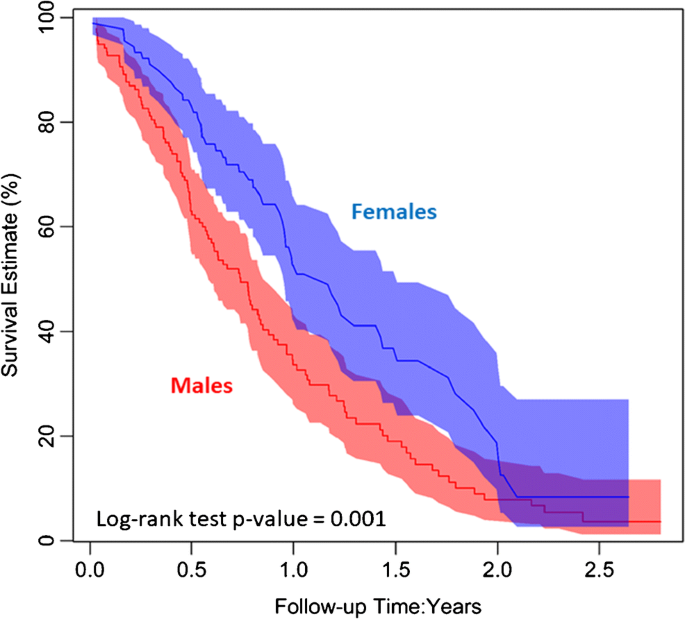
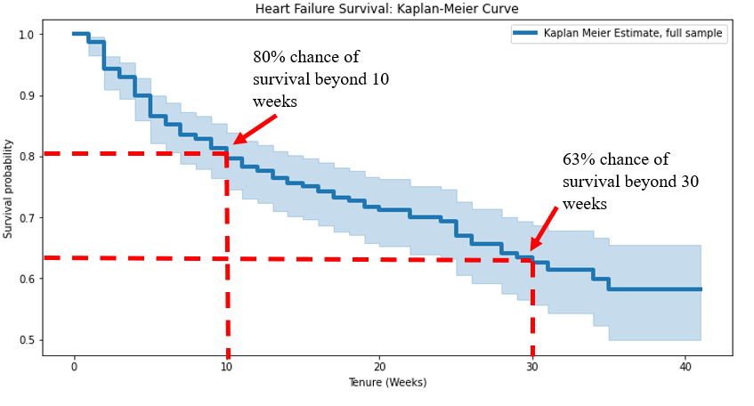
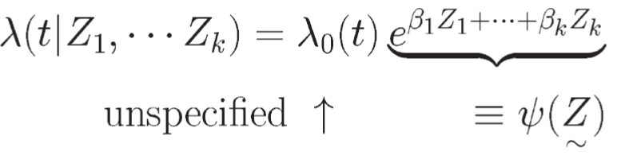
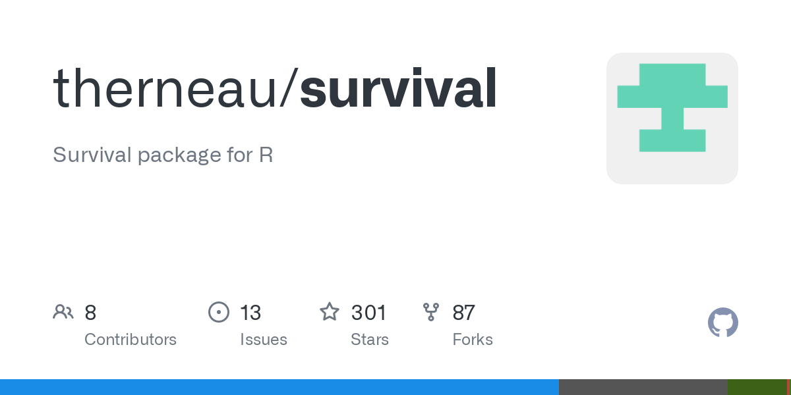

SuRviving: A Dive into Survival Analysis
What is Survival Analysis?
- Collection of statistical procedures.
- Answer questions related to survival past a time or event.
- Data form: time until event occurs.
- Convention:
time(survival time),event(failure).

Examples of Survival Analysis
- Clinical trial: Test medicine effects, time until disease.
- Finance: Credit model, time to client default.
- Economics: Unemployment duration.
- Industry engineering: Lifetime of products.
Types of Survival Data
- Complete data
- Truncation: Observations based on events.
- Censoring: Time of event is imprecise.
- Three types: right, left, and interval censoring.
More on Censoring
- Right censoring: Most common. True time > Observed time.
- Left censoring: True time < Observed time.
- Interval censoring: Between two observed times.

A note on right-censoring
Time to the occurrence of a given event (e.g. death) measured from a well-defined starting point (time origin)
- e.g. Time from study enrollment to death in a cancer clinical trial
The full time to death is not observed for some subjects
Withdrawal, lost to follow-up, alive at the end of study
All we know is the survival time is larger than the censoring time (e.g. time from study enrollment to drop out)
Goals of Survival Analysis
Estimate & interpret survival and hazard functions.
Compare survival/hazard functions.
Assess relationship of variables to survival time.
Data Layout
- Represented by pair
(t, d). t: time,d: censoring indicator.d=1if failure,d=0if censored.x: covariates of interest.
Survival Function
Proportion of population still without event by time t.
Graphed as decreasing smooth curve.
S(t) = Pr(T > t)

| ## Estimating Survival Curves |
| - Kaplan-Meier (KM) estimator used. |
| - Step function, not smooth. |
| - Curve jumps at observed failure times. |
|  |
Hazard Function
Alternative names: Incidence rate, Instantaneous risk.
Instantaneous potential for event to occur.
Values range between zero and infinity.
Relative Risks
Known as Risk ratio, Hazard ratio (RR/HR).
Measure strength of effect on survival.
Defined via hazard rates of treatment vs control groups.
Testing Survival Curves Differences
Log-rank test for two survival curves.
Stratified log-rank test for categorical variables.
Log-Rank Test
Test equality of two survival curves.
Statistic based on series of tables.
Test at infinity many time points.
Cox regression
Cox regression

Cox Proportional Hazards Model
Model setup
The Cox PH model specifies the hazard for individual i.
Note: There is no intercept term in the Cox model.
Model assumption
Proportional hazards (PH) assumption.
PH assumption requires a constant over time
Model interpretation
Checking Assumptions
Deviance residual plot
Schoenfeld resiual plot
to check proportional hazards assumption
randomness of residuals == proportionality
When PH Assumption is Violated
Stratified Cox model
Time-varying coefficients
Accelerated failure-time models (AFT)
Parametric survival analysis
Multilevel survival models etc…
Implementing survival analysis in R

Conclusion
Survival Analysis is crucial in various fields.
Various methods available for estimation & testing.
R offers comprehensive tools for survival analysis.